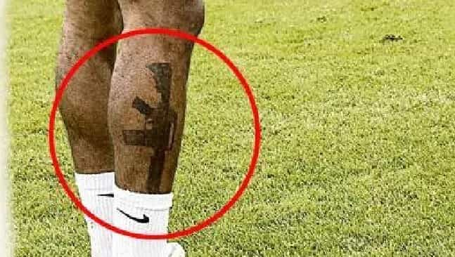

John Carver is a four year ROK veteran with over fifty articles of SJW-triggering truth bombs on archive. You can follow him on Twitter if you are so inclined.


The British have a famous saying when it comes to comparing their two most famous homegrown team sports (Association Football and Rugby Union) when they are played on home turf. Football is “a gentleman’s game played by hooligans” while Rugby is “a hooligans game played by gentlemen”.
The comparison was always meant to be tongue-in-cheek, but when you look at a modern day professional soccer pitch (sorry British readers, I’m going back to Americanisms now), it doesn’t appear to be highly distorted from reality. Soccer stars are plastering themselves in copious amounts of jailhouse ink, and this will have disastrous consequences for a whole new generation of young people around the world who idolize these men.
The current World Cup in Russia is beaming this whole new level of degeneracy right into the living rooms of 14-year-old Thiago in Brazil, 16-year-old Pedro in Mexico, 13-year-old Ivan in Russia, 15-year-old Giuseppe in Italy, and countless other easily-swayed young minds across the planet. Let’s take a look at what we are dealing with shall we.
These aren’t photos from the World Cup, but this clearly shows how international superstar Lionel Messi actually had more brains in his 20-something youth than his jailhouse tattooed and peroxide-blonde early 30’s carcass on the right.
Have no fear, fathers-with-daughters and employers of the world. For this Brazilian man is “spiritually in tune”.
Lionel Messi and Marcus Rojo. Giving their young fans in Buenos Aires and Rosario a good idea of how they can spend their pesos before sky-high Argentinian inflation eats it all up.
Mexican players disembarking from a plane in Russia, with the man on the right looking like he’d fit right in with MS-13 once his career is over.
The current Brazilian squad is so inked up, it’s almost counter-culture to not have a tattoo.
I hope that Spanish man’s not looking at them like he’s considering it for himself…
Mais tinta Brasileira! (More Brazilian ink!) üòÄ
Not in the World Cup, but if David Beckham is declared “sexiest man alive” while famously having over forty tattoos, you know a lot of his imitating young fans—and their future employment prospects—will be in for a world of hurt.
Even the Belgians are waffling up their arms.
A substantial injury forced the English player Ryan Mason into “soccer retirement” at the premature age of 27 (in lieu of 33 or so), but he’s still probably sporting this bizarre looking tattoo of a grumpy harridan.
“What’s that? You’re one of my biggest fans and your having trouble finding a living wage job? Only a part-time gig at Starcucks is offering? How can that be?”

Non-white “English” star Raheem Sterling showed off this poor taste tattoo to his 3.6 million Instagram followers before the World Cup. It looks like something Carl Johnson could get at the tattoo parlor in Grand Theft Auto San Andreas.
As expected, perennial ROK favorite Japan is keeping it clean.
Soccer stars have incredible agency and sexual market value through their fame, fortune, lean physiques, and being in the prime of their adult life (20-35). They’ve got it all. So by all means, they can afford to be covered in tattoos without far-reaching consequences to themselves, their relationships, or their financial prospects.
However, once upon a time, sports stars were encouraged to be good role models to young people, and expected to have a clean and friendly image both on and off the field of play. Having tattoos even as recently as the 90’s would have been highly discouraged.
The fact of the matter is that many young fans will aspire to be like their favorite player, and yet 99,999 out of 100,000 will not make any kind of headway in the world of professional soccer. They are going to have to (for lack of a better word) look for “normal” jobs one day, and we’ve explored the dangers and red flags behind tattoos countless times before.
Heck, even the players should avoid tattoos for the sake of their own abilities. There is some evidence to suggest that soccer players suffer a 3-5% drop in performance level after having tattoo work done.
Read More: Globohomo Rainbow Mafia Is Forcing The U.S. National Soccer Teams To Wear Gay Pride Jerseys